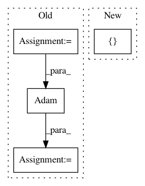

ff68020f31663a0c0023a47dc347531f1f4250af,ann_architectures/cifar10/pure_cnn.py,,,#,30
Before Change
// Train for 350 epochs and reduce learning rate by factor 0.1 at epochs
// [200, 250, 300]
lr = 0.001
nb_epoch = 50
batch_size = 128
nb_classes = 10
// Input image dimensions
img_rows, img_cols = 32, 32
img_channels = 3
init = "he_uniform"
reg = l2(0.001)
border_mode = "same"
// Data set
(X_train, y_train), (X_test, y_test) = cifar10.load_data()
Y_train = np_utils.to_categorical(y_train, nb_classes)
Y_test = np_utils.to_categorical(y_test, nb_classes)
print(X_train.shape[0], "train samples")
print(X_test.shape[0], "test samples")
model = Sequential()
model.add(Dropout(0.2, input_shape=(img_channels, img_rows, img_cols)))
model.add(Convolution2D(96, 3, 3, init=init,
W_regularizer=reg, b_regularizer=reg))
model.add(Activation("relu"))
model.add(Convolution2D(96, 3, 3, init=init,
W_regularizer=reg, b_regularizer=reg))
model.add(Activation("relu"))
model.add(Convolution2D(96, 3, 3, init=init, subsample=(2, 2),
W_regularizer=reg, b_regularizer=reg))
model.add(Activation("relu"))
model.add(Dropout(0.5))
model.add(Convolution2D(192, 3, 3, border_mode=border_mode, init=init,
W_regularizer=reg, b_regularizer=reg))
model.add(Activation("relu"))
model.add(Convolution2D(192, 3, 3, border_mode=border_mode, init=init,
W_regularizer=reg, b_regularizer=reg))
model.add(Activation("relu"))
model.add(Convolution2D(192, 3, 3, init=init, subsample=(2, 2),
W_regularizer=reg, b_regularizer=reg))
model.add(Activation("relu"))
model.add(Dropout(0.5))
model.add(Convolution2D(192, 3, 3, border_mode=border_mode, init=init,
W_regularizer=reg, b_regularizer=reg))
model.add(Activation("relu"))
model.add(Convolution2D(192, 1, 1, border_mode=border_mode, init=init,
W_regularizer=reg, b_regularizer=reg))
model.add(Activation("relu"))
model.add(Convolution2D(10, 1, 1, border_mode=border_mode, init=init,
W_regularizer=reg, b_regularizer=reg))
model.add(Activation("relu"))
model.add(AveragePooling2D(pool_size=(6, 6), strides=(1, 1)))
model.add(Flatten())
model.add(Activation("softmax"))
optimizer = Adam(lr*0.1) // SGD(lr=0.01, momentum=0.9, decay=1e-6, nesterov=True)
model.compile(optimizer, "categorical_crossentropy", metrics=["accuracy"])
// Whether to apply global contrast normalization and ZCA whitening
After Change
samples_per_epoch=X_train.shape[0],
validation_data=testflow,
nb_val_samples=len(X_test),
callbacks=[checkpointer])
plot_history(history)
score = model.evaluate_generator(testflow, val_samples=len(X_test))
In pattern: SUPERPATTERN
Frequency: 3
Non-data size: 4
Instances
Project Name: NeuromorphicProcessorProject/snn_toolbox
Commit Name: ff68020f31663a0c0023a47dc347531f1f4250af
Time: 2016-09-07
Author: bodo.rueckauer@gmail.com
File Name: ann_architectures/cifar10/pure_cnn.py
Class Name:
Method Name:
Project Name: ecs-vlc/torchbearer
Commit Name: 0de148f6892361e61d4b68cf97814e73692f6b1a
Time: 2019-03-14
Author: mp2u16@ecs.soton.ac.uk
File Name: docs/_static/examples/gan.py
Class Name:
Method Name:
Project Name: rusty1s/pytorch_geometric
Commit Name: b44364811b14bde01d84554624a9bffa0e4976e3
Time: 2018-03-07
Author: matthias.fey@tu-dortmund.de
File Name: examples/cora_gcn.py
Class Name:
Method Name: